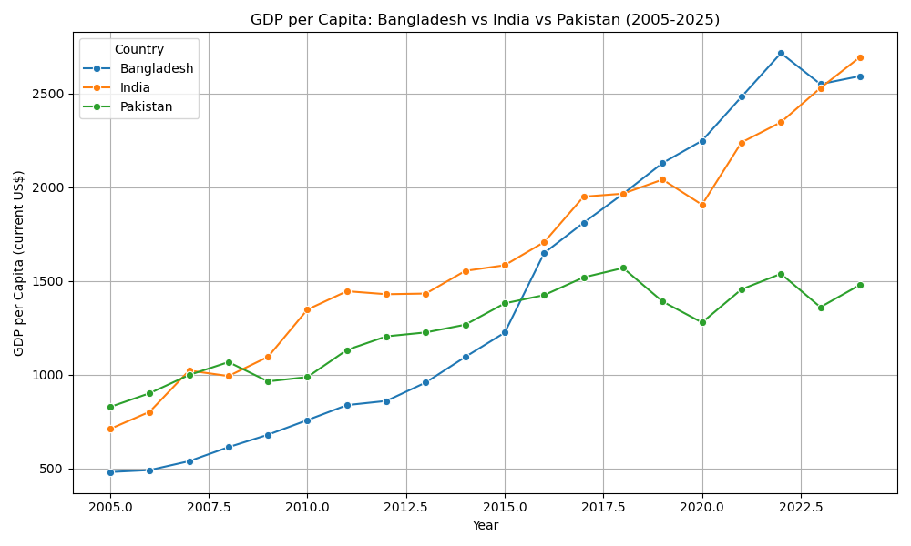

GDP per Capita: Bangladesh, India & Pakistan
A Comparative Analysis (2005–2025)
Executive Summary
This report presents a comparative analysis of GDP per capita (US $) trends across Bangladesh, India, and Pakistan from 2005 to 2025. The data was sourced from World Bank. The analysis tracks economic growth trajectories of three major South Asian economies over two decades. The findings reveal diverging growth patterns, with India maintaining the highest GDP per capita throughout the period, while Bangladesh demonstrates a notable acceleration in recent years, even overtaking India and maintaining lead for a window of 5 years.
Why This Project
This is the first project that I did, intended as a practice exercise towards computational science and data engineering workflows.
The scope of practice was:
Python Scripting: – using Python scripts for:
- Extracting data
- Cleaning data and saving it in a usable format
- Performing analytics
- Creating visualizations of the results
Documentation: – using documentation tools for academic or enterprise style documentation and presentations:
- Quarto
- Typst
Methodology
The project followed a simple workflow, each handled by a dedicated Python script.
1. Data Acquisition (download_data.py)
Data was downloaded programmatically from the World Bank API using the requests library, covering GDP per capita (current US$) for Bangladesh, India, and Pakistan from 2005 to 2025.
2. Data Cleaning (clean.py)
The raw data was cleaned and restructured into a tidy usable format - handling missing values, renaming columns, dropping whitespaces and other anomalous signs and formats, then saving the output as a CSV file ready for analysis.
3. Visualization (plot.py)
The cleaned data was plotted using matplotlib and seaborn, producing a multi-line chart comparing GDP per capita(US $) trends across the three countries, with countries represented by separate colored line over the full time period.
Project Structure
GDP_perCapita_BD-IND-PAK/
├── download_data.py
├── clean.py
├── plot.py
├── GDP_per_capita_BD_IND_PAK_2005_2025.csv
├── GDP_per_capita_BD_IND_PAK_2005_2025_clean.csvResults
GDP per Capita Trends (2005–2025)

Insights
As can be seen from the plot
India consistently maintained the highest GDP per capita among the three nations overall.
Bangladesh showed a remarkable acceleration in growth since 2015, briefly overtaking India from roughly 2018 to 2023, maintaining a lead for approximately five years – a significant achievement for a country considered to be one of the lower lincome ones, liberated only in 1971 with a very dense population.
Pakistan showed comparatively slower and more stagnant growth over the two decades. Pakistan’s internal and external conflicts with world leaders and surrounding nations evidently plays a role in that.
The diverging trajectories suggest differing economic policies, export performance, and development strategies across the three nations.
References
- World Bank. World Development Indicators: GDP per capita (current US$). Retrieved from https://data.worldbank.org